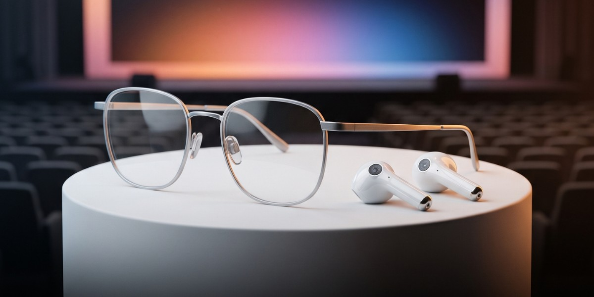

Geekotidien · Édition du 17 novembre 2026
Lunettes connectées Apple
Selon une rumeur, Apple présenterait ses lunettes connectées à la WWDC 2027

Selon Mark Gurman, de Bloomberg, Apple voudrait présenter ses premières lunettes connectées lors de la WWDC de juin 2027. Elles seraient pilotées par Siri AI et interagiraient avec des applications tierces sans sortir le smartphone.
L'article évoque aussi des AirPods dotés de caméras. Les lunettes concurrenceraient les Ray-Ban Meta ainsi que les lunettes Android XR, notamment celles de Samsung, Gentle Monster et Warby Parker, qui utilisent Gemini.
Apple n'a fait aucune annonce à ce sujet. L'information repose sur une newsletter de Mark Gurman, qui n'est pas liée dans l'article.
Le + : Il s'agit d'une rumeur journalistique : aucune annonce officielle n'a été faite par Apple.